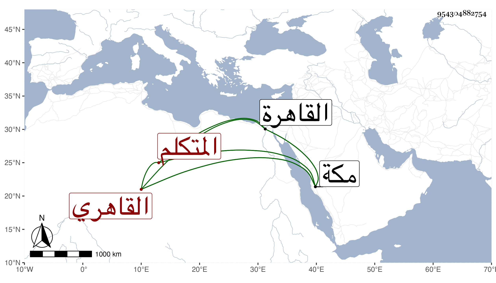

0902Sakhawi.DawLamic.ITO20230111-ara1.EIS1600.954304882754
Biography ID: 954304882754
580
محمد بن داود بن سليمان القاهري . المتكلم أبوه في حسبة مكة عن سنقر الجمالي وكان قبله في خدمة زين العابدين المناوي وأبيه وهو وإن قيل أنه دخيل فهو بالأدب والخدمة كفيل ، عرض بمكة على بعض محافيظه وسمع مني أشياء ثم صلى بالناس في مقام الحنابلة التراويح في سنة سبع وثمانين وشهدته في بعض الليالي ثم التفت إلى التكسب وجلس في باب السلام مع العطارين وتزوج إلى أن رجع مع أبويه وهما الآن بالقاهرة .
